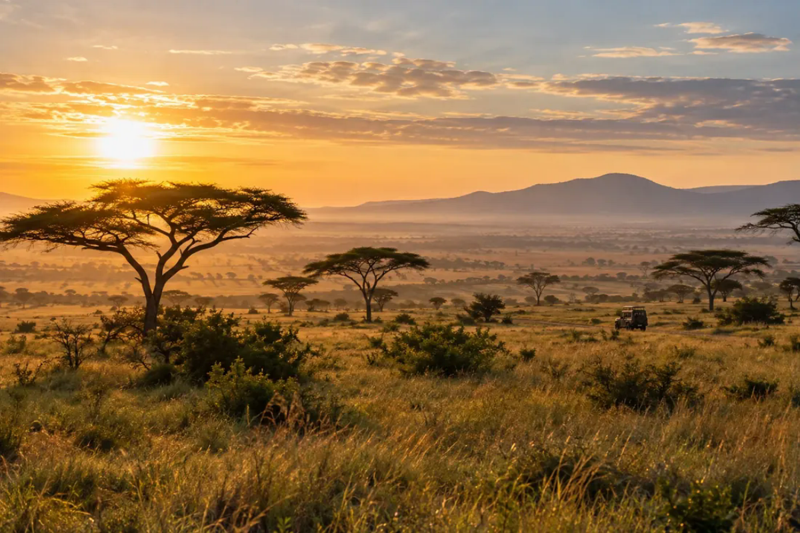

NairobiArrive, settle in, and explore a neighborhood food market.
1 night07 / TRAVEL · KENYA ITINERARY PLANNERTravel at your pace.
Travel at your pace.
Not someone else’s checklist.
Choose a few places and the kind of days you want. Rift & Route turns those preferences into a sample trip outline you can refine.
Fictional travel concept · sample itinerary and planning estimate · no live availability

RIFT & ROUTE / ITINERARY BUILDER
SAMPLE ROUTE · NO BOOKINGChoose what belongs in your trip.
YOUR SAMPLE ROUTE
6 DAYSNairobi + Maasai Mara
2 destinationsBalanced pace2 travelers
Travel to Maasai MaraTransfer day · leave time for the journey and check-in.
On routeMaasai MaraChoose a guided wildlife day and keep time for a slower morning.
3 nightsReturn to NairobiAllow a buffer for the transfer and your onward travel.
DepartureSample land estimateFor 2 travelers · international flights excluded
$990–$1,620Illustrative planning range only. Park fees, seasonal rates, and transport must be confirmed with local operators.
PRODUCT THINKINGStart with the feeling
Start with the feeling
you want from the trip.
Good itinerary tools help people choose, understand trade-offs, and leave room for the unexpected rather than overloading every day.
Browse by interest
Compare wildlife, city, nature, and coast stops before committing to an itinerary.
Match the trip length
Adjust the pace and number of days to keep travel and activity time realistic.
Plan before booking
Use the sample route as a starting point for conversations with verified local operators.
WHAT WOULD MAKE THIS REAL
Discuss travel products ↗Validate every route with people who know the ground.
A production planner needs verified travel times, seasonal details, local partner inventory, accessibility information, and transparent booking terms.